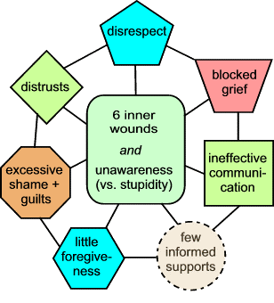

The Web address of this article is
http://sfhelp.org/relate/keys/barriers.htm
Updated
April 11, 2015
Clicking underlined links here will open a
new window. Other links will open an informational popup,
so please turn off your
browser's popup blocker or allow popups from this nonprofit Web site.
If your playback device doesn't support Javascript, the popups may not display.
Follow underlined links after
finishing this article to avoid getting lost.
This is one of a series of articles in Lesson 4 - optimize your relationships. It proposes nine common
social-relationship
stressors, and links to solutions for each of them.
To
get the most from this article, first read...
the intro
to this Web site and the premises
underlying it
All healthy adults and kids seek satisfying relationships.
Learningto maintain satisfyingrelationships and to
resolve relationship problems takes years of experience. Our feel-good, warp-speed culture doesn't prepare most young adults
for this vital task very well. That's partly why this educational Web
site and its guidebooks exist.
This YouTube video provides perspective on what you'll read in this
article. The video mentions eight lessons in this Web site - I've reduced
that to seven.
Premises
Think
of the relationships that
have the greatest impact on your daily life and contentment. Then identify and significant problems you're experiencing with any of them. With them in
mind, compare your beliefs with these...
1) Arelationshipexists when the presence,
actions, and personality of person "A" has a "significant effect" on person "B."
Significant is a subjective judgment.
2)A relationship problem occurs wheneither
person feels their key relationship
needs aren't being met well enough.
3) Relationships decay or thrive depending on
whether both people can problem-solve (fill unmet needs) effectively or not.
4) There are many
kinds of social relationship, and a wide
mosaic of surface needs that they fill.
Most surface problems are caused by
a mix of nine core factors. Each factor ("barrier") affects the others.
5) If one or both partnersarepsychologically
wounded
and
unaware,
they will usually have great difficulty managing the other barriers. This
is a major reason for psycho9logical and legal divorce.
6) Our society currently doesn't teach people (like you?) (a)
to be aware of these relationship barriers or (b) how to manage
them well enough. This inexorably
promotes the lethal [wounds + unawareness]
cycle.
From
clinical experience with over 1,000 typical women and men and research since
1979, I propose effective resolution options for eight of these relationship barriers. Click
on any barrier to learn more about it and these options.
Note that
dishonesty is not included because
that's usually a surface problem.
The most effective way to
start reducing these barriers is to study and apply...
Lesson 1 - assess for and reduce psychological wounds,
Lesson 2 - learn to use effective communication skills,
Lesson 3 - learn
and apply healthy-grieving basics; and...
Lesson 4 -
learn and practice healthy-relationship basics.
Reluctance to invest time and energy in these Lessons is usually a sign of
psychological
wounds and
unawareness.
Learn something about yourself
with this 1-question
anonymous poll.
Recap
This Lesson-4 article proposes that most social and innerpersonal
relationship "problems" result from up to nine specific barriers. Seven
are symptoms of two primary stressors: (a) psychological wounds
and (b) unawareness in one or more people.
Based on
36 years' research
and experience, this 7-lesson self-improvement course offers practical ways to reduce these relationship barriers
and protect kids from
inheriting them.
Pause, breathe, and reflect: why did you read this article? Did
you get what you needed? If not, what
do you need? Who's answering these questions - your wise, resident
true Self or
''someone else''?